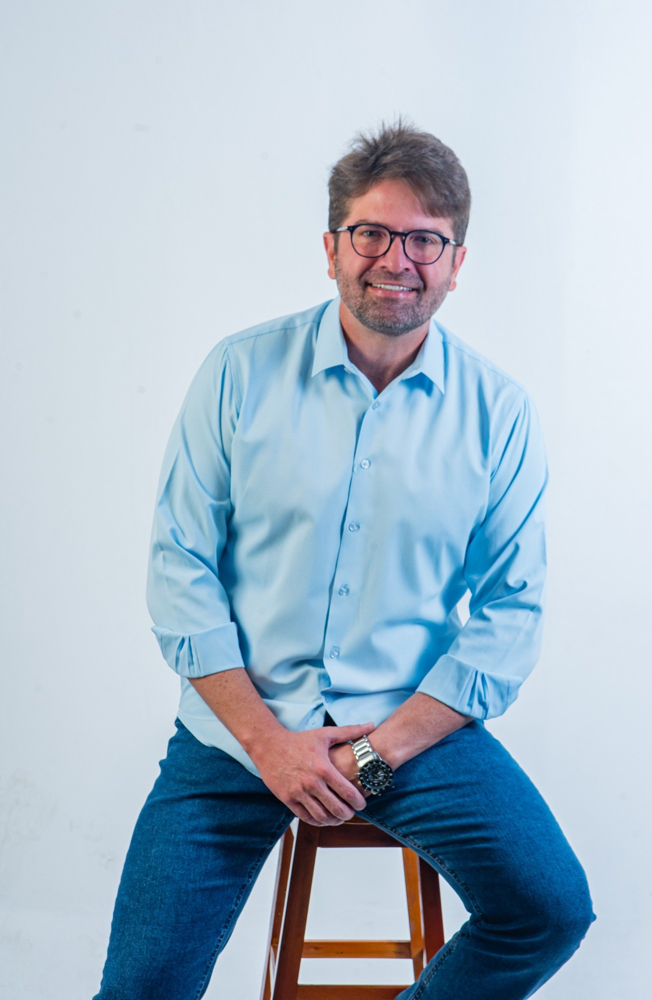
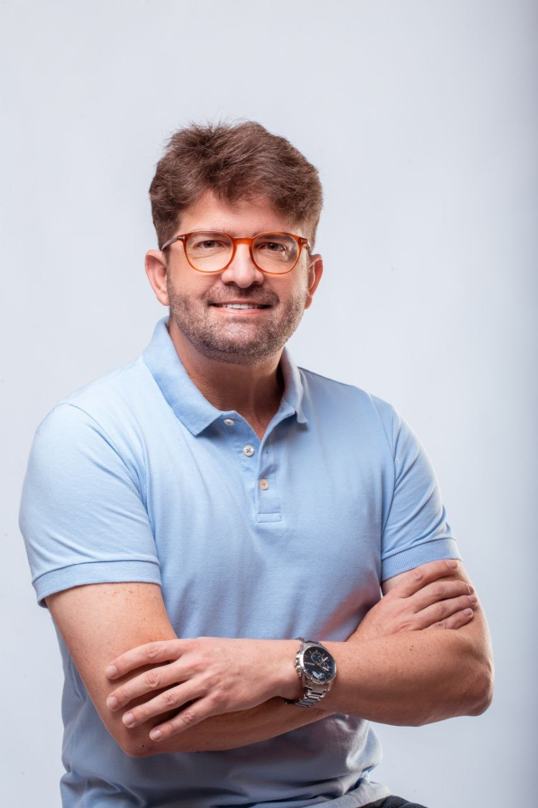
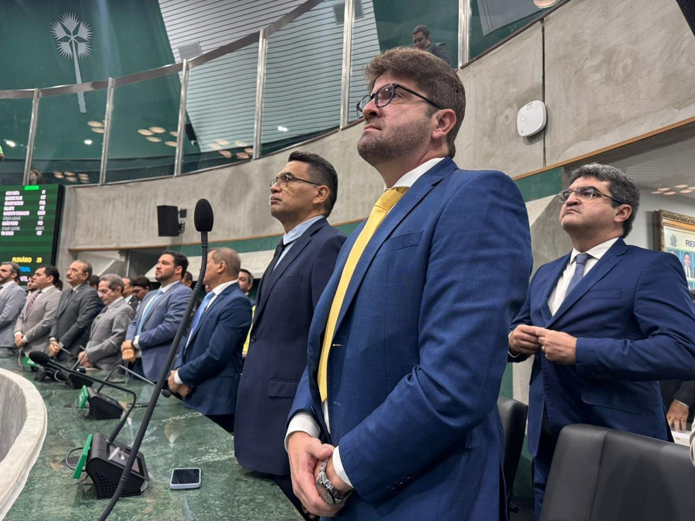
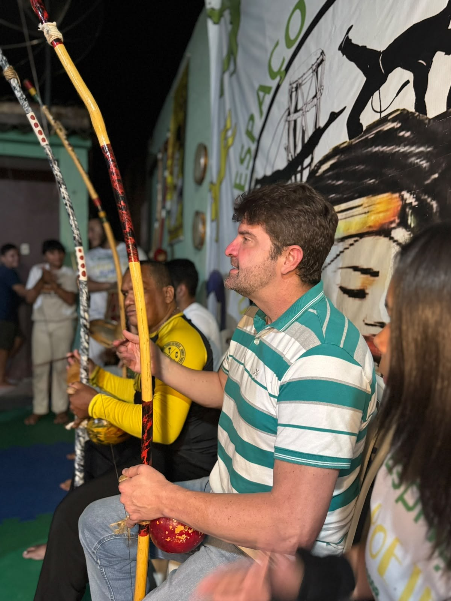
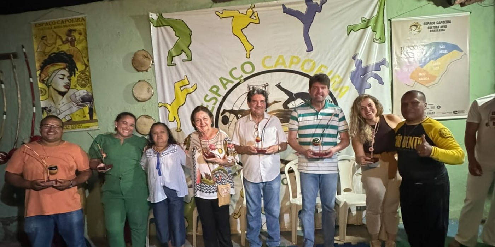

Médico
Atuação consolidada na saúde pública e privada, com olhar técnico e humano para os desafios reais da população.
O Cariri que nós queremos
Dr. Aloísio Brasil une experiência na saúde, na educação, na gestão pública e na vida real de quem conhece de perto os desafios do nosso povo.

Quem é Aloísio
Filho do Cariri, médico, professor, gestor e liderança pública. Dr. Aloísio Brasil carrega uma história marcada pela dedicação à saúde, pela formação de profissionais, pela gestão e pelo contato direto com a população.
Atuação consolidada na saúde pública e privada, com olhar técnico e humano para os desafios reais da população.
Experiência acadêmica na formação de novos profissionais e contribuição para o fortalecimento da medicina no Cariri.
Vivência em administração em saúde, auditoria, planejamento e melhoria dos serviços públicos.
Uma caminhada política pautada por presença, diálogo e compromisso com a região.

O que dizem sobre Aloísio
“Aloísio é uma pessoa do bem: carinhoso, humanitário, muito estudioso, determinado, perseverante e brincalhão.”
Mãe“Foi o único que pegou na minha mão quando todos soltaram.”
Solange MonteiroDesenvolver o Cariri é aproximar tecnologia, saúde, educação, emprego e oportunidades. É olhar para cada cidade, cada bairro e cada família com responsabilidade e vontade de realizar.
Projeto em destaque
Uma política pública estratégica para reunir universidades, empresas, startups, centros de pesquisa, governo e investidores com o objetivo de transformar conhecimento em riqueza, gerar empregos qualificados e criar soluções para problemas reais da população.
Trabalho e presença pública

Na vida pública, Dr. Aloísio defende uma política conectada com a realidade das pessoas: ouvindo, estudando, propondo e buscando caminhos concretos para o desenvolvimento regional.

Gente da Gente
Nenhuma transformação nasce distante da realidade. Ela começa nas ruas, nas casas, nas conversas e no respeito por quem vive o Cariri todos os dias.





Família e valores
A vida pública também é feita de valores. Família, respeito, responsabilidade e compromisso com as pessoas são parte da história que orienta a caminhada de Dr. Aloísio.
“A esperança é a ponte entre os desafios de hoje e as conquistas de amanhã.”
Eventos, encontros e alianças
A construção de uma região mais forte passa pelo diálogo com a população, com lideranças locais e com quem acredita no potencial do Cariri.
Com trabalho, preparo e união, o Cariri pode avançar em desenvolvimento, inovação e oportunidades para as pessoas.
Uma agenda construída com diálogo, esperança e compromisso com um futuro de mais desenvolvimento para o Ceará.
“A esperança é a ponte entre os desafios de hoje e as conquistas de amanhã.”
Contato
Este é um canal oficial para acompanhar a trajetória, os projetos e as ações do Dr. Aloísio Brasil.